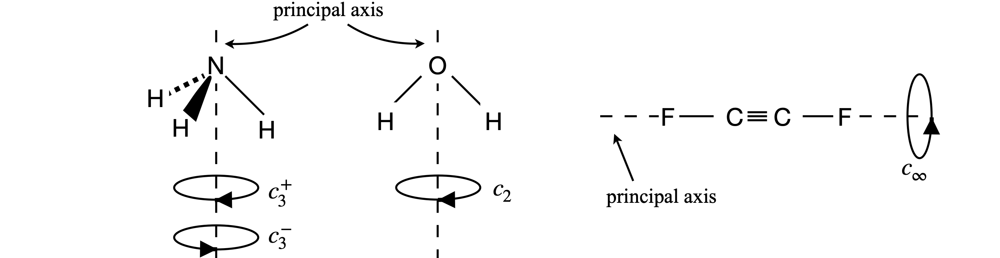
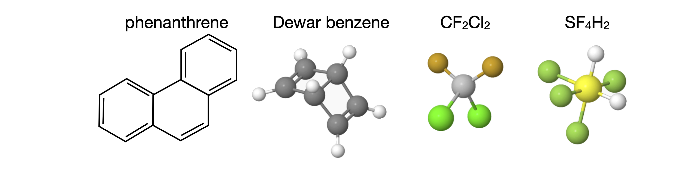
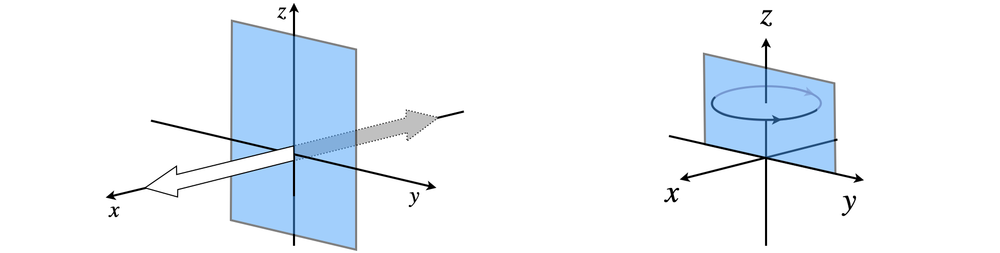
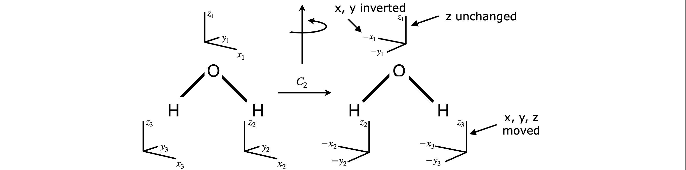
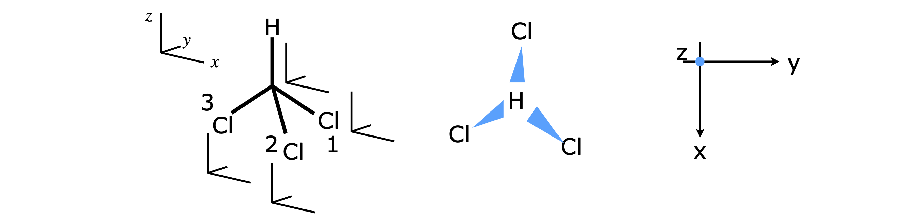

Molecular Group Theory
Contents
Molecular Group Theory#
# import all python add-ons etc that will be needed later on
%matplotlib inline
import numpy as np
import matplotlib.pyplot as plt
from sympy import *
init_printing() # allows printing of SymPy results in typeset maths format
plt.rcParams.update({'font.size': 14}) # set font size for plots
6.1 Motivation and Concepts#
When we learn to draw molecules and molecular orbitals their inherent symmetry becomes clear; benzene or perhaps tetrahedral methane spring to mind and possibly the geometry of sp\(^2\) and sp\(^3\) hybridizations. To characterize exactly what such symmetry means is the role of molecular group theory. This can also be used to determine the selection rules of spectroscopic transitions, to characterize the ‘shapes’ of normal mode vibrations and simplify molecular orbital calculations. In chemistry, the word ‘symmetry’, while retaining its colloquial meaning also has a technical meaning and this might appear to be rather abstract and divorced from other topics such as quantum mechanics and spectroscopy. Group theory’s jargon does not help in learning the subject mainly because it appears to be so abstract. In fact, it is quite the opposite: it is intensely practical, and expresses a complicated set of rules and ideas in a few symbols; \(D_{6h}\), for example, encapsulates all the many symmetry properties of benzene. The jargon we shall have to understand will lead us to be able to distinguish between
\(\qquad\)symmetry elements, symmetry operations, irreducible and reducible representations, characters, classes,
\(\qquad\)basis sets, similarity transforms, and Mulliken labels.
This section can only give a brief introduction to the subject to act as a basis for further study. There are many books on this topic, but Vincent (2001) follows a tutorial approach; Molloy (2004) has many molecular examples; Atkins & Friedman (1997) has a chapter giving a thorough mathematical approach; and Cotton (1990) and Bishop (1993) discuss the subject fully.
The organization of this section is as follows: first, the geometrical properties of symmetry elements and operators are introduced. These are then used to identify a point group. It is then shown how two combined operations lead to the formation of an operator multiplication table, and how a symmetry operation can be represented by a matrix. Next, the pertinent properties of a mathematical group are described, and it is demonstrated how symmetry operations can form such a group. The character table is described next, and it is shown how the symmetry operations can be represented by a row of numbers rather than as a matrix or a symmetry label. Understanding how to use the information presented in the point group to characterize molecular vibrations and orbitals is our ending point.
6.2 Essential jargon#
Symmetry is defined as the relationship between parts of an object or between groups of objects in space. To identify the symmetry elements inherent in a molecule, we look at those geometrical operations that can be performed that will make the molecule indistinguishable from its initial state. Rotations and reflections are two of five such operations and are described further in Section 6.3. Group theory shows how symmetry properties can be represented by a set of numbers, called characters when collected into a table called a point group or character table, see Fig. 15 for an example. It is quite remarkable that in the context of group theory, a symmetry operation such as rotating a molecule can be represented by a number, often \(0\) or \(\pm 1\) although other values, including complex numbers, are possible depending on the point group. These numbers are the characters of the point group and a row of characters is called an irreducible representation or ‘irrep’. The character table uniquely defines the symmetry of a molecule and properties, for example, how different molecular orbitals behave and whether visible, infrared, and Raman transitions can occur, and, if they do, the orientation of the transition dipoles in the molecule. All the symmetry operations belonging to each point group are listed along the top row of a point group table; see Fig. 7.15. The characters are in the body of the table. In the next paragraphs, these concepts are expanded upon.
Most molecules contain very little symmetry, cholesterol or SOCl\(_2\) are examples, but water, ammonia, chlorobenzene, ferrocene, and particularly benzene each have many symmetry elements. The more ‘regular’ the molecular structure is, the larger the number of symmetry elements it contains, which increases the number of symmetry operations that can be performed on these elements. To work out what point group a molecule belongs to and to determine its properties, the victim molecule is subjected to a given set of symmetry operations about each of the symmetry elements that may be present. You look at the molecule and then decide, by intuition, experience, or trial and error, which symmetry elements are present. The point group is then identified by the set of operations that leaves the molecule indistinguishable from its starting condition. The starting point is thus to know what the symmetry elements and operations are, and then to learn how to determine which ones are present in a molecule. Usually a simple three-dimensional model will help when doing this; it is sometimes difficult to ‘see’ the symmetries present from a sketch even if it is in perspective. It is a skill that improves with practice, and, as with riding a bicycle, if it is not done for a while, you can be a bit ‘wobbly’ to begin with.
6.3 Symmetry operations and Symmetry Elements#
Symmetry operations act via those symmetry elements that the molecule contains, which may be an axis, mirror plane or centre of inversion. The operation moves the molecule in space to a new, perhaps indistinguishable position, but the symmetry elements remain fixed. The words ‘operation’ and ‘element’ are often used interchangeably, but technically the operation can only occur about a symmetry element. For example, with a water molecule which has the same symmetry as ClO\(_2\), Fig. 11, you will usually see a mirror plane (the element) and the reflection (the operation) at the same time. The operations and elements are linked because certain operations can only act on certain elements. If an operation does not leave the molecule indistinguishable, then it is not present.
Figure 8. Indistinguishable squares.
The effect of any valid symmetry operation is always to leave the molecule in an indistinguishable state\(^*\) not necessarily an identical state. To understand this important distinction further, consider the square shown in Fig. 8, where the label is used only to identify one corner. Rotating the square by \(90^\text{o}\) (in ‘math speak’ operating with a \(+\pi/2\) rotation operator) makes the right-hand square indistinguishable from the left-hand one. Only after four similar rotation operations are the two squares identical.
A study of group theory shows that there are only five types of operators that could leave a molecule in an indistinguishable state. However, before operating on a molecule, a principal axis must first be chosen. All the symmetry operations are referenced with respect to the principal axis, which is the axis of highest rotational symmetry in the molecule. If two or more axes are the same, then one victim must be chosen. Figure 9 shows some examples. It is normal also to choose the principal axis as the z-axis and then to define x- and y-axes at right angles in the usual way. If the molecule is planar, as is naphthalene, the z-axis is usually chosen to project out of the plane.

Figure 9 Principal axes (dashed) and the rotation operators about this symmetry element (axis) that make the molecules indistinguishable.
The operators are:
(i) Identity#
The identity id labelled \(E\). No atoms change position with this operation and all molecules possess the Identity.
(ii) Rotation#
Rotation about an axis, labelled \(C_n\). This symmetry element is an axis that often coincides with an x-, y-, or z-axis, but might be in any other direction depending upon the molecule. Rotation by \(180^\text{o}\) is labelled \(C_2\), by \(120^\text{o}\; C_3\), etc. The subscript defines how many times the operation that makes the molecule identical has to occur. A molecule may have rotation about more than one axis. The label \(C\) is a shorthand for cyclic.
(iii) Reflection#
Reflection in a mirror plane\(^{**}\; \sigma\) The symmetry element is a plane. There are three types of mirror planes: vertical if the mirror edge runs along the principal axis, horizontal if this axis is at \(90^\text{o}\) to the mirror, and dihedral if the mirror divides two axes; see figure 10. There may be more than one of each type of mirror plane in a molecule. For example, water or ClO\(_2\) has two vertical planes labelled \(\sigma\) and \(\sigma'\) or \(\sigma_V\) and \(\sigma_V'\) (or \(\sigma(y,z)\) and \(\sigma(x,z)\)), see Figure 11. A horizontal mirror plane is labelled \(\sigma_h\), a dihedral plane \(\sigma_d\). One or more superscript dashes ‘ are added if more than one of a type of mirror plane is present. In cases where a mirror plane falls on two axes this may alter- natively be labelled \(\sigma(x, z)\) etc.
(iv) Inversion#
Inversion through a centre \(i\). The element is the centre of inversion the operation always changes coordinates from \((x, y, z) \to (-x, -y, -z)\) and vice versa. See figure 12. Only one inversion centre is possible.
(v) Rotation - reflection#
A combined rotation - reflection operation, \(S_n\), also called an improper rotation. There may be more than one of these. The axis subscript \(n\) is defined as in (ii). The operation is rotation followed by reflection in a plane perpendicular to the rotation, \(\sigma_nC_n\). Figure 14 shows an example of an \(S_4\) operation (\(S\) is from the word Sphenoidisch).
\(^*\) An operation that ‘takes it into itself’ is used in some texts to mean indistinguishable. \(^{**}\) The Greek letter sigma, \(\sigma\) , is used to represent the initial letter of the word Spiegelung or reflection.
Figure 10. The three different types of mirror plane.
Three examples of rotation operations are shown in figure 9. The ammonia molecule when rotated about the principal axis by \(120^\text{o}\) becomes indistinguishable. It is also indistinguishable if rotated by twice this amount, but if rotated three times it is more than indistinguishable; it is identical to the starting state of the molecule. The molecule is also indistinguishable if rotated by \(-120^\text{o}\) or \(-240^\text{o}\). The label \(C_3\) represents one rotation operation as the molecule is moved by \(120^\text{o} = 360^\text{o}/3\) of a turn; two rotations are labelled \(C_3^2\) and three \(C_3 \equiv E\). If you are unclear about this, label the H atoms 1, 2, 3 and draw out the pictures or make a model; it really does help to do this yourself. The water molecule has only to be rotated by \(\pm 180^\text{o}\) to become indistinguishable, which is a \(C_2\) operation. The fluorinated acetylene can have any angle of rotation to become indistinguishable and this is labelled \(C_\infty\).
Now consider symmetry or mirror planes. There are three types, as shown in figure 10, defined relative to the principal and other axes. The molecule SOCl\(_2\), figure 11, has one chlorine atom that is in front of the plane and one that is behind it and the SO atoms are in the plane. This molecule has only one vertical mirror plane and no other symmetry operations are valid, other than the identity. Only the mirror plane makes the molecule indistinguishable. The symmetry operations for chloride dioxide, which has a \(C_{2V}\) point group label, as do water, SO\(_2\), and pyridine among many others, are also shown in figure 11, except the identity, which is always present but changes nothing. The first step is to define the principal axis and as ClO\(_2\) is bent into a V shape, the axis has the direction shown in the figure. (The molecule could be also drawn the other way up.) There are only four types of operations in the \(C_{2V}\) point group, which are (i) the identity \(E\), (all molecules have this); (ii) rotation by \(180^\text{o}\) around the principal axis labelled \(C_2\); and (iii) there are two vertical mirror planes \(\sigma_V\) and \(\sigma_V'\) . The superscript dash is only used only to distinguish one axis from the other. If a set of \(x, y, z\)-axes are drawn on the molecule with \(z\) as the principal axis, then the mirror planes could alternatively be labelled \(\sigma(xz)\) and \(\sigma(yz)\). There is a possible ambiguity because some authors place the x-axis in the plane of the molecule and some place the y-axis here. You need to check this when looking at different point group tables. The mirror planes are vertical because their edge runs along the principal axis. If the axis passed perpendicularly through the middle of a mirror plane, this would be a horizontal mirror plane, figure 10.
To summarize: in the \(C_{2V}\) point group, the only symmetry operations present are the identity, whose symbol is \(E\), and is present whatever the point group, one rotation \(C_2\), and two mirror planes, \(\sigma_V\) and \(\sigma_V'\). A \(C_3\) or \(C_4\) rotation, which would be rotation by \(120\) or \(90^\text{o}\) respectively, cannot make the molecule indistinguishable from its starting position and neither can an inversion or any type of improper rotation operation \(S_n\), and thus they are not present.
Figure 11. Left: The one mirror plane in a \(C_s\) point group molecule. Right: Symmetry operations in a \(C_{2V}\) molecule. The \(C_2\) operation is rotation by \(180^\text{o}, \sigma\) and \(\sigma '\) operations are reflections in mirror planes as shown. Labels a and b help when performing operations; the atoms are identical.
The naphthalene molecule, figure 12, has many more symmetry elements than the centre of inversion. These are indicated in figure 13. The principal axis could be any of the three \(C_2\) axes because they are all equal; the coordinates drawn show that the out of plane direction is chosen to be \(z\) and so this will be chosen as the principal axis. You could choose another orientation of axes if you wanted to, but however the axes are chosen the molecule still has three \(C_2\) axes, three mirror planes running along these axes, a centre of inversion and a mirror plane in the plane of the molecule, labelled \(\sigma_h\) because it is perpendicular to the principal axis. The other element is the identity \(E\). With this information the point group can be identified. The next section shows how this may be done.
Figure 12. Each of these molecules has an inversion centre. This is shown with a red dot and is at the S atom in SF\(_6\) so not visible. Every atom can be moved through the inversion centre to an equivalent point on the opposite side of the molecule leaving it indistinguishable. The operation always changes coordinates from \((x, y, z) \to (-x, -y, -z)\) and vice versa.
Figure 13 Symmetry elements in naphthalene. The principal axis is out of plane along \(z\).
Figure 14. The \(S_4\) rotation-reflection operation applied to the tetrahedral molecule CCl\(_4\). The atoms are labelled only to allow the operations to be followed they are otherwise identical.
6.4 A strategy to identify molecular Point Groups#
The web site www.molecule-viewer.com has \(\approx 500\) examples of molecules in all commonly used point groups. The 3D images are rotatable and planes and axes can be added as hints to test your ability to identify the point group.
When trying to assign a point group, first see if the molecule is a ‘special case’, that is tetrahedral, octahedral, icosahedral (football shaped), or is ‘cylindrical/linear’ such as O\(_2\), HCl or FCCF, FCCH, etc. and identify it on this basis alone; see Section 6.5 for examples. You can always check later to see if you have guessed correctly by comparing with the point group (character) table.
Next, look for any obvious overall rotational symmetry; for example, benzene clearly has sixfold symmetry and pyridine twofold, and this often indicates the principal axis direction and the symmetry label for the highest rotation operator. If a centre of inversion is present, this severely limits the choices of point groups. Particular axes or mirror planes can now be hunted down. Usually these will be enough to restrict your search to one or two point groups. At this point, you will have a list of some rotations and mirror planes and perhaps an inversion. The next step could be to look at tables of point groups and to see how best to match them with your findings so far. The table you choose may suggest the presence of some feature that you have missed.
If the highest (principal) axis is twofold symmetric, the point group will be restricted to those with a \(2\) in their subscript, \(C_{2V}, D_{2h}\), etc. The groups with \(C_2, C_3\), etc. labels are single axis groups, meaning that only one rotation axis is present. Molecules with more than one rotation axis are labelled \(D\).
Three groups have low symmetry and are \(C_1\), fully asymmetric, \(C_s\), e.g. SOCl\(_2\), with only one mirror plane, and \(C_i\), which only has a centre of inversion. At the other end of the scale, the cubic groups, tetrahedral, octahedral, and icosahedral molecules, have very many symmetry elements and are easily identified.
Better than guessing is to use a systematic way of finding the point group and a ‘route map’ algorithm is shown in figure 17. The route map follows roughly the same method as just outlined. Sometimes a shortcut can be made by using the point group labels because they contain a shorthand version of the symmetry operations. The \(C\) and \(D\) groups are very common and the meaning of the labels is shown in figure 16. Assigning point groups is a strange skill; you can become very proficient quite quickly, but lose this skill equally quickly if it is not practiced. However, with a little revision, this soon returns.
Summary#
(i)\(\quad\) Check for special cases; diatomic, octahedral and tetrahedral molecules.
(ii)\(\quad\) Look for rotation axes; highest order axis is the principal axis, this gives the first subscript, \(n\).
(iii)\(\quad\) Determine orientation of any \(C_2\) axes perpendicular to principal axis. If none is perpendicular then letter is \(C\) (or \(S\)) else \(D\).
(iv)\(\quad\) Determine the orientation of any mirror planes relative to principal axis; this gives subscripts \(V,h,d\).
(v)\(\quad\) Identify all remaining symmetry elements/operation and check with point group tables.
Figure 15. Navigating the point group character table. The symmetry species \(A_1,A_2,E\) are also called Mulliken labels.
Figure 16. notation for \(C\) and \(D\) point groups
6.5 Examples of Point Groups#
Most of the H atoms are not included in many structures. To make the figures clear the scale of the molecule is not the same in each figure.
6.6 Products of Operators#
To determine what a group multiplication table is, it is necessary to examine the products of two or more symmetry operations. These are then compared with the properties of a mathematical group, and this set of operations may then be associated with a particular group. How this is done is explained in the next few sections.
Using the symmetry operations shown in figures 11-16 and figure 19, or the matrix representation of the next section, the group multiplication table will be constructed for the \(C_{2V}\) point group. The operations are \(E, C_2, \sigma_V, \sigma_V'\) and a molecule of this point group is shown in figure 11. The product table is made by multiplying every operation by every other one, both ways round - for example, \(\sigma_V C_2\) and \(C_2 \sigma_V\) - and then determining if the product is also one of the operations, which it must be if \(\sigma_V\) and \(C_2\) both belong to the group. The rules of this ‘game’ are given in Section 6.7.
Figure 19 shows one \(C_2\) rotation; two of them will make the molecule identical or \(C_2C_2 = C_2 = E\) and similarly using figure 11 shows that reflecting in either of the mirror planes twice each in succession, also produces an identical molecule; therefore, \(\sigma^2 = E\) and \(\sigma '^{2} = E\). Multiplying an operator by itself produces the diagonal terms in figure 18. The identity multiplied by itself is still the identity; similarly, the identity multiplied by any other operator leaves the operator unchanged so this produces the left-hand column and top row. What remains are the other off-diagonal terms, such as \(\sigma_VC_2\) and \(C_2\sigma_V\) and these are left for you to confirm. The result for this point group is a symmetrical product table meaning, that in the \(C_{2V}\) point group all the operators commute with one another, which is called an Abelian group. This is not always true; for example, see the \(C{3V}\) table produced in Q 17.
The \(C_{2V}\) table shows that the operations form a group, because they conform to the rules of a group as described in Section 6.7 and each row in the body of the table is therefore a representation of the group. It is not a very convenient representation however, because these can hardly be distinguished from the operators. Another representation can be imagined where all the entries in the table would be 1. This would follow the rules for forming a group but would be useless, as one operation could not be distinguished from another. The clever part was the development of a representation of each point group, such as \(C_{2V}\) or \(D_{2h}\), in a meaningful and practically useful way, and to this end, matrices can be used.
6.7 Pertinent properties of a Mathematical Group#
The word ‘group’ in the context of molecular point groups has a precise mathematical definition. The group consists of a set of members that are the symmetry operations and follow four rules.
(i)\(\quad\) There must be an identity operator that commutes with all others in the group and leaves them unchanged. The identity is always labelled \(E\).
(ii)\(\quad\) The product of two operators \(A\) and \(B\) is also an operator and member of the group, i.e. \(AB\) belongs to the group as does \(AA\) and \(BB\).
(iii)\(\quad\) The operators follow the associative product rule \((AB)C=A(BC)\).
(iv)\(\quad\) Every operator \(A\) has an inverse \(A^{-1}\) that is also an operator and member of the group.
\(\qquad\) Any operator \(A\) that operates on its inverse produces the identity \(AA^{-1} = E\).
\(\qquad\) Therefore, by this rule, the operator \(A^{-1}\) must be a member of the group.
The members of the \(C_{2V}\) group are \(E, C_2, \sigma_V, \sigma_V'\). The multiplication table, figure 18, shows that rule (ii) is followed, because each of the entries in the table is a member of the group. In symmetry operations on molecules, it is common for the inverse and the operator to be identical, i.e. an operator can be its own inverse; for example, \(C_2C_2 = C_2 = E\) meaning that \(C_2^{-1} = C_2\). This shows that rule (iv) is followed.
6.8 Symmetry Operations as matrices#
Although we can perform symmetry operations in a geometrical sense, as was done to produce the \(C_{2V}\) product table, these can be rather awkward to use. It turns out that a symmetry operation can be performed as a matrix multiplication using as a basis either a molecule’s atoms, or its orbitals or bonds. The trace of the matrix, the sum of its diagonal terms, will form a representation of each operation and so form a representation of the group. The matrix used for each symmetry operation used must be a unitary matrix, \(| \pmb{M} | = 1\), because bond angles and lengths must be unchanged to maintain a molecule’s symmetry. As an example, the symmetry properties of chlorine dioxide \(ClO_2\) will be examined, using as a basis set the three atoms and with the oxygen atoms labelled \(a\) and \(b\) for convenience, this basis is \((Cl, O_a, O_b)\), figure 19. The oxygen atoms are labelled only to keep track of them; they are otherwise identical. The identity operation is represented by the matrix equation where the vector containing the atoms does not change,
and, by the rules of matrix multiplication, the matrix\([E]\) must be a \(3 \times 3\) matrix that keeps the left- and right-hand column matrices equal. Note that the two column matrices are identical; \(E\) is, after all, the identity! Because the identity matrix leaves the column vector unchanged, it must be the unit matrix \(\pmb{1}\),
A \(C_2\) operation or \(180^\text{o}\) rotation exchanges the oxygen atom positions \(a\) and \(b\) but leaves the Cl atom unchanged;
The matrix equation must therefore have the form
To find out what matrix is needed, a little trial and error is required. In the matrix equation, \(\displaystyle \begin{bmatrix} 0 & 1 \\ 1 & 0 \end{bmatrix} \begin{bmatrix} A \\ B \end{bmatrix} = \begin{bmatrix} B \\ A \end{bmatrix} \) swaps the positions of \(A\) and \(B\). Thus we can write the \(C_2\) matrix operation as
Now clearly this procedure is a complex business in a molecule even with only three atoms, but, in fact, you effectively do this operation in your head when you look at a picture of the molecule and reflect or rotate it. Suppose that the molecule is again rotated by \(180^\text{0}\), then it must return to where it started, i.e. it must be identical. This would mean that the following equation must be true, and, although we have already seen this is the case, it can be proved with the multiplication,
Because the \(C_2\) matrix swaps the positions of the a and b atoms, this equation will work because the first \(C_2\) swaps them and the second swaps them back. Alternatively, this double operation could be written as
where \(C_2^2\equiv [E]\). Notice that in this last calculation, the associative product rule of matrices, and of a group (rule (iii)), was used because \(C_2C_2\) was worked out first. To show that this last result is true, work out the direct multiplication,
Repeating the calculation for the reflections produces the matrices
which are the same as other matrices in this group. If we perform operations on any pair of matrices, say rotation and reflection, a group multiplication table can be built. With this, and by applying methods from group theory, a character table that describes all the symmetry properties of a molecule can be produced. Instead of using the atoms as a basis, the same matrices would be produced by three unit length vectors, one along each bond and one along the principal axis, and each originating at the Cl atom.
The matrices just calculated represent the operations in the \(C_{2V}\) point group with three atoms or unit vectors along the principal axis and bonds and can be collected together as
which is one form of a reducible representation \(\Gamma_R\), and is reducible because it is not in its simplest form since some matrices have off-diagonal terms, therefore the characters in the point group cannot be determined directly. The trace of each matrix produces the table;
If any other basis set covering the same ‘space’ were used then the trace of the matrices giving rise to the reducible representation would be the same. If a basis in a different ‘space’ were used, such as \(x, y, z\) unit vectors, then a different reducible representation would be produced, as described in the next section. Two similar spaces could be an atoms’ p orbitals in the form \(p_x, p_y\), and \(p_z\) or as \(p_0, p_{-1}\), and \(p_{+1}\) where the numbers represent the \(m\) quantum numbers. These two forms of orbitals can be transformed into one another; \(p_z = p_0; p_x = (p_{+1} + p_{-1})/ 2\), and \(p_y = -i(p_{+1} - p_{-1})/2\) hence their ‘space’ is the same.
The process of working out the effect of each operator is not complicated, but can prove tedious; however, it is important because if all the \(C_{2V}\) operations can be identified with just one molecule of this point group the same rules must apply to all molecules of the same point group no matter how many atoms it has. As these have all been worked out; all we usually need to do is to identify the point group. Figure 20 shows a few molecules belonging to the \(C_{2V}\) point group.

Figure 20. Some molecules belonging to the \(C_{2V}\) point group. For clarity some H atoms are ignored. The structures are only approximately to scale relative to one another. Where the \(C_2\) axis is shown the orange sphere indicates the ‘centre of gravity’ of the molecule, i.e. the ‘point’ in the point group.
6.9 Representations based on matrices#
By trial and error we find that choosing a basis set of unit vectors along the x-, y-, and z-axes, and following the method used above, will produce three diagonal matrices for the \(C_{2V}\) point group. The vectors can be imagined along the axes shown in Figure 19. A reflection in the \(z-y\) plane will leave the \(z\) and \(y\) vectors unchanged, but invert the \(x\), therefore the matrix equation is
A similar calculation for the \(x-z\) plane changes only the \(y\) coordinate giving
and the \(C_2\) rotation matrix changes \(x \to -x\) and \(y \to -y\).
The four matrices form a reducible representation, which is now diagonal
The trace of each matrix is the not same as for the other basis set, as we use atoms as the basis above but \(x,y,z\) unit vectors here. If the ‘space’ were the same then the same \(\Gamma_R\) should be produced, which means that the trace of the matrix in any appropriate basis set (the trace is the sum of the diagonal elements) can form the reducible representation and, clearly, this is far more practical than using the matrix itself.
In this particular case, each matrix is diagonal so that the irreducible representation (irreps) can be extracted directly, but the matrices are only \(3 \times 3\) and not \(4 \times 4\), which they would need to be to produce all four irreps; obviously one will be missing. If there are \(n\), basis set elements then \(n\) irreps will be produced. The irreps are found by looking at each row in the matrix across the symmetry operations. The sum of the irreps taken column-wise produces the reducible representation \(\Gamma_R\).

Figure 21. Left. Reflection of the \(x\) unit vector in the \(y-z\) plane swaps \(x\) coordinates only. Right. The effect of a mirror on a circular vector is \(-1\).
The irreps are
If the columns in this table are added up then the reducible representation of the previous table is produced which means \(\Gamma_R = A_1 + B_1 + B_2\). There is one irreducible representation missing from this table, which is the \(A_2\) symmetry species. This is discovered by using a circular vector that rotates about the z-axis, see figure 21. The \(E\) and \(c_2\) operations do not affect this vector but reflection does. In a mirror the vectors ‘sees’ the reverse of itself as a reflected image so the effect is \(-1\) for both \(\sigma\) and \(\sigma'\) and this is what appears in the character table for a circular vector about the z-axis.
The full \(C_{2V}\) character table is
The way linear, \(x, y, z\) and product \(xz, z^2\), etc. operators transform are shown in the right-hand most column. The entries in the body of the table are called the characters, and hence the name character table. The symbols (Mulliken labels) in the left-hand column are the labels of the irreducible representations but usually these are called the symmetry species.
The top row has the one of the symbols \(A, A', A_1, A_{1g}'\) or \(A_{1g}\) depending on the point group but \(\Sigma_g\) for \(C_{\infty V}\) and \(\Sigma_g^+\) for \(D_{\infty h}\) and is always the totally symmetric representation; the lowest row is the ‘least symmetric’. The symmetry species \(B_2\) in the \(C_{2V}\) point group has the properties that it is unchanged by the identity \(E\); is changed by \(180^\text{o}\) rotation about the \(C_2\) axis and by reflection in the mirror plane \(\sigma\), but unchanged by reflection in mirror plane \(\sigma'\).
The diagram, figure 15, shows the various properties contained within the point group table, in this case for \(C_{3V}\). The Mulliken label ‘\(E\)’ in the bottom left-hand column in the table means that this irreducible representation is doubly degenerate. This should not be confused with \(E\) the identity operation.
6.10 Similarity and Classes#
If symmetry elements in a group \(C_3^+, C_3^-, \sigma\), etc. are equivalent they satisfy the similarity transformation. For example, if \(A, B\), and \(C\) are elements of a group then \(A\) and \(B\) are equivalent, and are said to be conjugate, only if they satisfy the similarity transform
Equivalent members of a group form a class, a class being a column of characters in the point group table. The number before the symmetry operation is the number of operations in the class, see figure 15. In \(C_{2V}\) there is only one member of each class, in \(C_{3V}\) there are two classes of \(C_3\) operations and three of \(\sigma_V\).
Looking at the multiplication table for \(C_{2V}\), figure 18, the product \(C_2\sigma_VC_2 = C_2\sigma'_V = \sigma_V\), and as \(C_2\) is its own inverse or \(C_2 = C_2^{-1}\), this equation has the form of a similarity transform, \(\sigma_V = C_2^{-1}\sigma_VC_2\). As each class is one dimensional in this case, the result of the similarity transformation of \(\sigma_V\) has to be \(\sigma_V\).
In \(C_{3V}\) we have not yet worked out the direct product table and matrices, this is done in questions 17-19, but suppose that we want to see if the rotations \(C_3^+\) and \(C_3^-\) (figure 9) are related by a similarity transform involving a mirror plane and if they are whether they belong to the same class. Using the H atoms as a basis the matrices are
where the \(\sigma_V\) mirror plane is along the bond you choose to be N-H3.
and the transform is \(\pmb{A} = \sigma_V^{-1}C_3^+\sigma_V\). By direct calculation, we find that \(\sigma_V^{-1} = \sigma_V\), i.e. \(\sigma_V\) is its own inverse, making the matrix product,
The calculation can be checked using Sympy.
A, C3, SV = symbols('A, C3, SV')
SV = Matrix([[0,1,0],[1,0,0],[0,0,1]] )
C3 = Matrix([[0,0,1],[1,0,0],[0,1,0]] )
A = SV*C3*SV
A
The calculation indicates that \(C_3^+\) and \(C_3^-\) belong to the same class for all point groups that contain a \(\sigma_V\) mirror plane. In \(C_{3V}\) there is one column for \(C_3\) operations and has two members in its class, \(C_3^+\) and \(C_3^-\). These are not usually expressed individually in the point group but instead \(2C_3\) is used a column heading because the characters are the same for both operators.
6.11 Direct Products#
Using characters, it is simple to form a direct product of two or more symmetry species. If operators are \(\pmb{A}\) and \(\pmb{B}\), the direct product is written as \(\pmb{A} \otimes \pmb{B}\). The symbol \(\otimes \) means calculate the direct product by multiplying pairs of characters together column-wise. One of the other symmetry species of the point group must be produced. If either A or B is the totally symmetric representation, the top line in the table, the result is always the other symmetry species B or A respectively.
In the \(C_{2V}\) table (see Section 6.9), the product \(\pmb{B}_1 \otimes \pmb{B}_2 = \pmb{A}_2\) as may be seen by multiplying the two elements of symmetry species \(B_1\) and \(B_2\) column by column and identifying the pattern of characters produced. If two species that are doubly or triply degenerate (\(E\) or \(T\) Mulliken labels) form a direct product, this has to be reduced in the normal way to a sum of irreducible representations. For example, in \(C_{3V}\), figure 15, the direct product \(\pmb{E}\otimes \pmb{E}\) produces the result\(\pmb{E}\otimes \pmb{E} = 4\pmb{E} \oplus \pmb{C}_3 \oplus 0\sigma_V\). The symbol \(\oplus\) means the symmetry species are added or, more properly, that \(4E,\, C_3\) but no \(\sigma_V\) are included in \(\pmb{E}\otimes \pmb{E}\). It is common in many texts just to use + instead of \(\oplus\). Reducing direct products is explained in Section 6.13, but first one important use of them is illustrated.
6.12 Selection Rules#
In the spectroscopy of molecules, symmetry and point group tables can be used to determine whether an electronic, vibrational, or rotational transition is going to appear in the spectrum. The probability of a transition \(R\) is proportional to the expectation value of the operator for that type of transition. This can be written for two wavefunctions for states \(a\) and \(b\) and a transition dipole operator \(\pmb{\mu}\) as
where \(\tau\) covers all the coordinates the wavefunctions may have. The intensity of a transition is \(R^2\). Symmetry can be used to determine if this integral is finite or not, i.e. whether the integral vanishes or not. Only a knowledge of the ‘shape’ of the wavefunctions and operator are required and no integration is involved and is a sophisticated extension of the odd - even rules to determine if an integral is exactly zero or not.
The absorption or emission of radiation involves an electric-dipole operator. This will transform as a linear vector in the x-, y-, or z-direction because it depends linearly on the change in charge distribution that occurs with the transition. The dipole moment is a vector \(\pmb{\mu} = q\cdot \pmb{r}\) where \(q\) is the charge distribution and \(\pmb{r}\) the displacement vector during a transition. Raman scattering, however, depends on having a change in the polarizability of the molecule. This is a measure of how easily the electron ‘cloud’ forming the molecular orbitals changes shape in the presence of the electric field of the radiation. This change is proportional to operators in two dimensions \(xy, x^2-y^2\), etc. and these are shown in the last column of the point group table.
If a transition is allowed between two states \(S_1, S_2\) with symmetry species \(\displaystyle\Gamma_{S1},\ \Gamma_{S2}\) respectively, then the direct product
where \(\Gamma \mu\) is the symmetry species of the operator for absorption/emission or that for raman transitions. This direct product has to include the totally symmetric representation of the molecule’s point group, which is always the top row of the character table. If the transition is of the electric dipole type then the operator’s symmetry species, (\(\Gamma_\mu\)) must be that of \(x, y\) or \(z\) as shown in the third major column of the point group table. For Raman transitions, the symmetry species corresponding to products \(xy, yz\), etc. are used. For example, in a molecule with \(C_{2V}\) symmetry species such as SO\(_2\), a Raman transition from a state with symmetry species \(A_2\) to that with species \(A_1\) will be allowed because an operator \(\Gamma_\mu\) transforming as \(xy\) belongs to the \(A_2\) symmetry species, making
where \(A_1\) is the totally symmetric species. An electric dipole transition would not be allowed because no \(x, y\) or \(z\) operator belongs to the \(A_2\) symmetry species necessary to make the product \(A_1\), see the \(C_{2V}\) character table above.
A transition between the states with \(B_2\) and \(B_1\) symmetry is not allowed with an electric dipole operator even though both \(x\) and \(y\) operators have these symmetries. The reason is that the direct product is not totally symmetric. For the y-direction transition,
similarly the x-direction operator produces the direct product
The z-direction operator is also no good, producing an \(A_2\) direct product. There are, however, allowed dipole transitions for example from state with symmetry species \(\Gamma_{S_1}=\Gamma_{S_2} =A_1\), with an \(z\) direction dipole and also when \(\Gamma_{S_1} =A_1,\, \Gamma_{S_1}=B_1\) with a \(x\) direction dipole and \(\Gamma_{S_1} =A_1,\, \Gamma_{S_1}=B_2\) with a \(y\) direction dipole.
El-Sayed Rules in spectroscopy#
This product of symmetry species approach can be extended to cover other transitions between state such as the non - radiative singlet - triplet (intersystem crossing) transition caused by spin-orbit coupling. This gives rise to the ‘El-Sayed’ rules i.e. ‘intersystem crossing is faster when there is a change of symmetry’ for example the rate of intersystem crossing \(^1\pi\pi^* \to \,^3n\pi^*\gt\,^1\pi\pi^* \to\, ^3\pi\pi^*\) and \(^1n\pi^* \to \,^3\pi\pi^* \gt\, ^1n\pi^* \to\, ^3n\pi^*\).
The spin-orbit operator transforms as \(R_{x,y,z}\) and appears in column 3 in the point group table.
Vibronic transitions and Herzberg - Teller coupling#
When a vibration is involved in an electronic transition the transition is called vibronic. The transition moment changes a little to reflect this and becomes
where \(R_e\) is the electronic term. Normally the vibrational part is separated out as by the Born Oppenheimer principle the electrons move far more rapidly than do the nuclei.
The square of the absolute value of the vibrational integral is called the Franck-Condon factor, i.e. \(|\int \psi_v^a\psi_v^b dQ|^2\).
Molecular vibrations can distort the molecule making forbidden transitions slightly allowed and the intensity for the transition will be borrowed from a nearby allowed transition if such exists. This ‘intensity stealing’ or Herzberg - Teller coupling gives rise to the vibrational features in the absorption spectrum of benzene in particular (Steinfeld 1981; Atkins & Friedmann 1997) but can occur in any molecule. In benzene the ground state to first excited state transition \(^1S_0(A_{1g})\to\, ^1S_1(B_{2u})\) is forbidden but this transition becomes weakly allowed because a vibration of \(e_g\) symmetry species (in the \(D_{6h}\) point group) can change the ground or excited state geometry. This forms the new symmetry of the ground state and the method outlined above is used to determine if the transition is allowed. The intensity of the transition is borrowed, or ‘stolen’ from an allowed transition nearby in energy and with the same symmetry as the vibrationally modified state. If this electronic state is present the symmetry may be suitable but the transition intensity can still be minute if it is far away in energy.
Figure 21a (left) shows the low resolution spectrum of benzene vapour and the forbidden transition \(v_{00}\) is indicated where it would appear. The lines labelled ‘A’ in the spectrum are transitions to the lowest singlet state with \(B_{2u}\) symmetry plus \(1,2\cdots\) quanta of the \(v_1=a_{1g}\) plus one \(v_6=e_{2g}\) vibration, i.e. \(nv_1+v_6\). The line labelled \(B_0^0\) at \(808\,\mathrm{cm^{-1}}\) to lower energy than the origin starts from \(v=1\) in the ground state to \(v=0\) in the lowest (\(B_{2u}\)) singlet so is a hot band and its intensity is sensitive to temperature. On the right of the figure are show the ground and relative excited states energies (not to scale and without vibrations) along with their symmetry labels.
Figure 21a. The vapour phase absorption spectrum where the missing \(0-0\) transition is labelled \(v_{00}\) and is at \(38086.1\,\mathrm{cm^{-1}}\). The transitions ‘A’ are to different vibrational levels in the excited state with increasing quanta \(n=0,1,2\cdots\) of \(nv_1\) plus an \(e_{2g}\) vibration. (Spectrum redrawn from J. Callomon, T. Dunn, I. Mills, Phil. Trans. Roy. Soc. (Lond) v259, p499, 1966). The relative energy of the ground and excited states is sketched on the right and is not to scale and without vibrations.
Benzene belongs to the \(D_{6h}\) point group, and looking at this (see www.molecule-viewer.com for tables) the translations needed for dipole transitions are \(z\to A_{2u}, (x,y)\to E_{1u}\) and \(x,y\) are in the plane of the molecule. The triple products, ignoring any vibrations for the moment are,
and the transition is therefore forbidden for all transition dipole directions to the first excited state of \(B_{2u}\) symmetry species. To work out the product either multiply the characters in the symmetry species, make a list and find the symmetry species that this corresponds to by inspection of the point group table, or look it up in a product table. If we suppose now that a vibration is used to change the symmetry of the state, either ground or excited we need the symmetry product to be totally symmetric, (\(A_{1g}\)), thus
and if we choose \(\Gamma_{vib}=E_{2g}\) this becomes the case because as we have just seen \(E_{1u} \otimes B_{2u} = E_{2g}\) and \(E_{2g} \otimes E_{2g}\) contains \(A_{1g}\) as any symmetry species multiplied by itself always contains the totally symmetric representation.
To gain some insight into why the vibration induces a transition we can expand the electronic part of the transition dipole \(R_{ev}\) eqn. 9a, as a Taylor series in a vibrational coordinate, say, \(Q\) and about the equilibrium position (superscript 0) to give
Substituting back into eqn 9a, since now we cannot assume that the Born-Oppenheimer condition applies, gives, after rearranging,
The first term is the same as eqn. 9a when Born-Oppenheimer applies and in benzene is zero by symmetry, but the second term is not and therefore some intensity is observed. Exactly how much depends on the slope of the electronic transition dipole with each vibrational mode, i.e. how much the molecular orbital’s symmetry is changed by a vibration and therefore a totally symmetric vibration cannot help break the symmetry. See J. M. Hollas, ‘Modern Spectroscopy’ 4th ed. publ. Wiley 2008 for a fuller description.
6.13 Reducible Representations#
When, for instance, the orbitals in a molecule are operated on with rotations or reflections, a reducible representation \(\Gamma_R\) is produced. This can be decomposed into some irreducible representations, which are the rows that appear in the character table. The effect that symmetry operations have, were calculated in Section 6.8 by setting up a matrix for each atom/orbital and working out the effect of each operation. A matrix has the following general form with unit Cartesian vectors, \(x_1, y_1, z_2\) and so forth on each atom.
The dimensions of the matrix depend on the number of basis vectors used to describe how the orbitals or vibrations change. The trace of each matrix is then calculated for each class of symmetry operation and then collected together to form the reducible representation. However, such an elaborate approach is not necessary, and the trace can be found more easily by following a small set of rules and so obtaining the reduced representation directly.
First, the atom positions or orbitals are drawn and labelled, then the molecule is subject to each of the symmetry operations of the point group in turn. A table is started and the first row is the list of symmetry operations. The second row is filled in according to four rules for each symmetry operation operating on each base vector.
(i)\(\qquad\) If unchanged, a value of \(1\) is entered in the table.
(ii)\(\qquad\) If changed in sign, \(-1\) is entered.
(iii)\(\qquad\)If moved in position, \(0\) is entered.
(iv)\(\qquad\) Add up all the numbers and enter the result under the symmetry operations column.
Consider now the p orbitals on SO\(_2\), as shown in figure 22, we will use these as a basis for the calculation. They could also be envisaged as unit vectors pointing up from the atoms. The figure tries to show a perspective view; the principal axis, \(z\), is equally placed between atoms 1 and 3 and through atom 2. The molecule has \(C_{2V}\) symmetry and the point group, which is shown above, has four operations \(E, C_2\) and two reflections \(\sigma (xz)\) and \(\sigma'(yz)\).
Operating on the molecule according to the rules (i) to (iii) produces the reduced representation \(\Gamma_R\).
The \(3\) in the identity operator column is produced because each orbital is unchanged with this operator. Rotation about the \(C_2\) or z-axis moves vectors on orbitals \(1\) and \(3\), so they count zero, and inverts orbital \(2\); therefore \(-1\) results. The reflections are calculated similarly.
Figure 22. p orbitals in \(C_{2V}\) symmetry. The shading indicated \(\pm\) phases and are used to identify changes under the symmetry operations. Instead of orbitals vectors on each atom pointing in the \(y\) direction could be used.
To reduce the representation, a tabular method, described by Carter (1997), is very convenient although a formula can be used. This method starts with the table just produced, and multiplies each term it contains by the corresponding element in the character table for each of the symmetry species, and then by the number of operations in each class. One product is shown in detail in the table. The number of operations in a class is shown in the heading of each column in the point group; see figure 15. In the \(C_{3V}\) point group this is two for the \(C_3\) operation. The sum of each row is made and divided by the total number of symmetry operations \(h\).
The \(C_{2V}\) point group only has one operation in each class, and the number of symmetry operations \(h = 4\). The table produced for the reduced representation of the \(C_{2V}\) molecule is,
The ratio of the sum and \(h\) must always be an integer. If not, a mistake has been made. This reduced representation of the p orbitals in SO\(_2\) is therefore composed of an \(A_1\) and two \(B_2\) irreducible representations; \(\Gamma_R \equiv A_1 + 2B_2\). We therefore expect molecular orbitals based on p orbitals to have these symmetries.
In the \(C_{3V}\) character table, figure 15, and relevant parts shown below, the electric dipole transition from \(A_1\) to \(E\) states is potentially allowed under \(x-\) or \(y-\) polarized transitions, because the \(x\) and \(y\) operators belong to the \(E\) symmetry species. However the product \(A_1 \otimes E \otimes E = E \otimes E\) is not an irreducible representation because the direct product is \(E = 4,\, C_3 = 1, \,\sigma_V = 0\).
Reducing the \(E \otimes E\) direct product is done as follows using the tabular method. Each entry in the table is the number from the reduced representation multiplied by the character and then multiplied by the number in each class. The total number of classes \(h = 6\) and the \(E \otimes E\) table is
Therefore the product \(A_1 \otimes E \otimes E \equiv A_1 \otimes(A_1+A_2+E)=A_1+A_2+E\). The product \(E\otimes E\) therefore contains one of each of the other species in the point group so that the transition would be allowed because \(A_1\) is present.
6.14 Normal Mode vibrations#
A normal mode is one of a set of the elementary vibrations of any vibrating object and is fundamental to understanding vibrations of any kind, whether in the engine or suspension of a car, in a washing machine, in a guitar string or in a molecule. If you were able to see a molecule, other than a diatomic, and watch the motion of the atoms, they would appear to be moving rather chaotically. However, to a good approximation it is always possible to assume that the complicated vibrations of any body can be broken down into a set of normal modes and then each of the individual stretching and bending normal motions of a molecule would be apparent. Rather than concentrating on the motion of one atom at a time, the motion of several together is considered and if we get this right, the motion will be that of one of the normal modes. This would, in effect, be a transformation from viewing the molecule in lab \(xyz\) coordinates, to viewing internal coordinates based on the motions of these several atoms and there is, fortunately, a systematic way of finding them. In any molecule, all the atoms are coupled through their bonds and in a normal mode, all the atoms move with the same frequency, have fixed amplitude ratios and fixed phase relationships between them. Unless the normal mode is, by symmetry, degenerate with another, each normal mode has a unique frequency.
The symmetry of a normal mode is described by one of the irreducible representations in the molecule’s point group. The fact that a symmetry label can be attached to a normal mode encapsulates the idea of collective synchronized motion; some examples are given below for a planar molecule such as HBF\(_2\). Notice that it is possible to have different normal mode displacements, and consequently vibrational frequencies, but with the same overall symmetry.
The first normal mode shown in figure 23 belongs to symmetry species \(A_1\) and each atom is moved in such a way as to stretch each bond in phase with the other. If the molecule were HBF\(_2\), the centre of mass is below the atom labelled \(x\) on a line from \(z \to x\). In the bottom right of the figure, the \(B_1\) mode has atoms moving together, but the central atom moves into the plane of the figure while the other three atoms move out, and vice versa.
No external force can act on a molecule due solely to its vibrational motion; therefore, no extra displacement or rotation of the molecule can occur during normal mode vibrations and the centre of mass must remain in the same place. If there are N masses (atoms) connected by forces (chemical bonds), then there are \(3N\) modes in a three-dimensional object. However, because we want vibrational normal modes, we have to remove three modes due to translation and three for rotation (two if the molecule is linear) as we are not interested in the whole body’s rotation or translation. This leaves \(3N - 6\) vibrational normal modes for polyatomic molecules and \(3N - 5\) for linear ones.

Figure 23 Normal mode displacements for a planar molecule ZXY\(_2\) (based on a figure in Appendix C, Carter 1997). The arrows indicate the direction the atoms move in, but not relatively how far they move; \(\pm\) show motion out of the plane of the paper. Typical bond displacements at room temperature are 1% of the bond length. The symmetry labels are also shown and each mode has its own unique frequency \(\nu_1,\, \nu_2\) etc.
6.15 Application to molecular vibrations#
Group theory plays an important part in working out what spectroscopic transitions can occur in a molecule, and this was outlined in Section 7.6.12. In addition, it can be used to work out what the normal mode symmetry species are going to be. Recall that a normal mode is the collective motion of the atoms in a molecule such that a constant phase relationship is maintained between them; see Figs 27, 78, and 79. Often these are characterized as symmetric stretch, asymmetric stretch, and bending vibrations, which is fine in a small molecule, such as SO\(_2\) or water. However, in larger molecule the vibrational motion becomes more complex and cannot be so simply described, but is instead characterized as a symmetry species of the molecule. The normal mode vibrations are given by the Mulliken labels listed in the left-hand column of the point group but usually with a lower case letter, e.g. \(b_{2g}\) rather than \(B_{2g}\).
The method outlined for working out orbital symmetry species can be adapted for use here. Again, a table is made up with a top row as the symmetry operations and entries filled in according to rules very similar for those for orbitals.
(a) Choose, either a set of three orthogonal vectors on each atom, or a single vector along each bond to be the basis set for the calculation. Which basis you choose will depend on the problem. The components of these vectors are added up to form the characters needed. This is be done with a set of rules.
(b) Move the molecule according to the symmetry operations in the point group.
(c) For a mirror plane and inversion, add 1 to the character under the symmetry operation for each vector unchanged and \(-1\) for each vector inverted and zero for each atom moved. Do the same for rotations if by \(90^\text{o}\) or \(180^\text{o}\), i.e. for \(C_4\) and \(C^2\) axes.
(d) For other rotations \(C_3\) for example,(or rotation-inversion) a rotation matrix has to be used to calculate the components of the character because the operation may mix the \(x, y\) and \(z\) components. The trace of the (rotation) matrix gives the character needed.
(e) Reduce the representation produced. If the three orthogonal vectors on each atom were used as the basis set, remove the symmetry species due to three translations, i.e. movement in space, and three rotations from the final list as these are implied by the orthogonal vectors. (The three rotations correspond to whole body rotation and not any internal molecular motion.)

Figure 24 Unit vectors with which to work out vibrational symmetry species.
The case of a \(C_{2V}\) molecule such as water is easy to follow; the operators are \(E, C_2\) and \(\sigma V(x,z)\) and \(\sigma'V(y,z)\). There are nine vectors, so the identity has a character \(E = 9\). The effect of the \(180^\text{o}\) rotation is shown in Figure 24. The vectors add up to zero for the H atoms as they move, \(+1\) for the \(z_1\) vector, and \(-1\) for both the \(x_1\) and \(y_1\) producing \(-1\) overall, which is the character for the reducible representation for the \(C_2\) operator. The two reflections are worked out similarly to rotation. Reflection in the \(x-z\) plane leaves \(x\) and \(z\) unchanged making six in total but each \(y\) is inverted therefore the character for the \(\sigma(x,z)\) is \(3\). The character for \(\sigma'(y,z)\) is one because the H atoms move under this operation so count zero and only \(x_1\) becomes \(-1\) and \(z_1\) and \(y_1\) are unchanged.
The reducible representation is therefore
This table reduces to
The result is \(\Gamma_R =3A_1 +A_2 +3B_1 +2B_2\). There are \(3N=9\) modes in total,\(3N-6\), thre eof which are vibrations, the others displacements and rotations. These transform as \(x, y\) and \(z\) and \(R_{x,y,z}\) and amount to \(A_1 + A_2 + 2B_1 + 2B_2\) leaving \(2A_1 + B_1\) as the vibrations. These species correspond to one totally symmetrical stretch and bend, and an asymmetrical stretch, see Figure 26.
In CHCl\(_3\) if we place vectors on each atom this makes a \(15\)-dimensional basis set and the \(C_3\) axis is then going to mix the \(x\) and \(y\) components if \(z\) is along the principal axis, figure 25. Chlorine atom 1 is on the y-axis and the carbon is at the origin. The symmetry operations in \(C_{3V}\) are \(E, 2C_3\), and \(3\sigma_V\). The reducible representation is again found by applying the operators in turn to each vector. The identity \(E\) scores \(15\), because each vector is unchanged. The mirror planes run along the principal axis and between each pair of Cl atoms. The mirror plane between Cl atoms 2 and 3 also runs along the H-C-Cl bonds containing Cl atom 1. The Cl-2 and Cl-3 atoms are moved by reflection so count zero for all vectors. The \(y\) and \(z\) coordinates on the C, Cl(1) and C atoms are unchanged and count one each, making six in total. The \(x\)-direction vectors on these atoms are inverted and count \(-1\) each. Do this for one mirror plane only the effect of the number of classes is accounted for when the representation is reduced. The reflections thus count \(6 - 3 = 3\).
The rotations are a little more complicated, but it is clear that the Cl atoms are each shifted by rotation and their vectors count zero. The H and C atoms each have their \(x-\) and \(y-\)directions mixed. The matrices to rotate a molecule are explained in Section 7, and we use this result. The new positions are \(x_\theta\) etc. after rotation by an angle \(\theta\).
If the angle is \(90^\text{o} \equiv \pi/2\) radians then rotation moves \(y\) into \(x\) and \(x \to -y\) and \(z\) is unchanged. The matrix is
Adding up the components in \(x, y\) and \(z\) produces \(+1\) and this is what is counted. This is the origin of the rule for rotations by right angles. However, it is entirely equivalent and simpler to calculate the trace of the matrix, which is one. The trace is invariant of the basis set, if these cover the same function space, so this can always be used.
In our molecule the rotation angle \(\theta\) is \(120^\text{o} \equiv 2\pi/3\) and the matrix is
which has a trace of zero. Thus the \(C_3\) rotation contributes zero to the characters. If you multiply the matrix with the \(x, y, z\) vectors, the sum of the all the product vectors’ components is also zero. The sum is \(-1/2 + \sqrt{3}/2 + 0 - \sqrt{3}/2 - 1/2 + 0 + 0 + 0 + 1 = 0\). The matrix calculation need only be done for one rotation in each class, i.e. we do not need to do both \(C_3^+\) and \(C_3^-\) as this is taken into account in reducing the representation. The result of the calculation is
This is reduced using the group table figure 15 to give
The reduced representation of CHCl\(_3\) vibrations in the Cartesian basis set is therefore composed of \(\Gamma_R = 4A_1 + A_2 + 5E\) making \(15\) species in total. There are six degrees of freedom, three for translations and three for rotations of the molecule to be subtracted. These add to \(A_1 +A_2+4E\) (see \(x,y,z\) and \(R_x,R_y,R_z\) in the point group table), which leaves \(3A_1+3E\) as the vibrational normal mode symmetry species. The number of normal modes remaining is \(3N - 6 = 9\), which is \(3A_1\) singly and three doubly degenerate \(E\) vibrations. The shapes of the normal modes for CHCl\(_3\) are illustrated in Herzberg (1964, vol II ), and in figure 25a.
Rotation axes \(C_n\) are numbered as fractions of \(360^\text{o}\) or \(2\pi/n\) making angle in the rotation matrix \(\theta = 2\pi/n\) and the trace of the rotation matrix for rotations with different \(n\) is \(T_{C_n}= 2\cos(2\pi/n) + 1\) . The trace for the first few \(C_n\) is
A similar calculation for rotation-reflection (\(S_n\)) produces \(T_{S_n}=-1+2\cos(2\pi/n)\), see question 26.

Figure 25 CHCl\(_3\) with orthogonal Cartesian sets of unit vectors. The middle image shows the view along the \(z\) axis.

Figure 25a. Normal modes in CHCl\(_3\). The arrows give the direction of simultaneous, in phase, motion of the atoms. Based on figure 91, Herzberg (1964, vol II, ‘Infrared and Raman Spectra’ publ van Nostrand 1964.)
6.16 Determining the shapes of Normal Mode vibrations and molecular orbitals using Projection Operators#
Having obtained the symmetry species of vibrations or molecular orbitals it is natural to want to see what these look like and to do this projection operators are used. What these operators do is to extract the symmetry adapted functions from the basis functions used to form them and so produce a linear combination L of the basis functions. Many basis functions can be chosen, but the easiest to use are usually vectors pointing along bonds or those representing a \(p\pi\) orbital. To form a linear combination, a ‘victim’ vector is chosen and operated on with each symmetry operation in the point group, \(C_2, \sigma(xz)\), etc. to find what vector this turns into. This vector’s name (the basis function) is then multiplied with the character from the point group corresponding to that symmetry operation and symmetry species. Finally, the names are added together by moving from one symmetry operation to the next along the top row of the point group. We expect the result to be the sum or difference of the displacement vectors for a molecular vibration, such as \(2v_1 + v_2 - v_3 \cdots\) and so forth. The same formula or algorithm is used if the combinations of atomic orbitals that make up molecular orbitals are sought.
The equation to make a linear combination is
where \(M\) is the symmetry species label, \(A_g, B_{3g}\), and so forth, \(h\) is the order of the group, \(d\) the dimension of the irreducible representation, and the sum is over all the classes. Because the resulting vector will be normalized \(d/h\) can be ignored. One further point is important. In the \(C_{3V}\) point group, for example, there is a heading \(2C_3\) as there are two members in this class, and this must be split in the summation into \(C_3^+\) and \(C_3^-\). This is because moving a vector \(120^ \text{o}\) to the right, say, will turn it into a different vector than turning \(120^\text{o}\) to the left, similarly, any mirror planes must be separated out. The character for symmetry species \(M\) is \(c_j\) and \(S_j(v)\) is the effect that operator \(S\) in column \(j\) of the point group has on our victim vector \(v\).
The result of this operation is to produce a vector whose name is recorded. For example, if \(S\) is the identity then the result is \(E_1(v) = v\), other operations may leave \(v\) unchanged or change it into another vector. Finally, note that if the reduced representation of the vibrations or molecular orbitals contains two or more symmetry species of the same type, e.g. \(2A_1\), then two or more different victim vectors will have to be chosen to obtain all the linear combinations.
In H\(_2\)O, SO\(_2\), and other triatomics with \(C_{2V}\) symmetry, it is clear that two of the vibrational modes stretch the bonds and one changes the bond angle. To work out the normal mode vectors, some representative vectors are placed along the bonds as in figure 26. You can choose where to put these but physically realistic choices will usually make the calculation simpler.
Figure 26 Left: Vectors which are the basis functions used to determine normal modes. Middle: The asymmetric normal mode \(b_1\) as \(v_1 - v_2\). Right, the two symmetric \(a_1\) modes.
In \(C_{2V}\), the normal mode vibrations have been found to comprise the symmetry species \(2A_1\) and \(B_1\). The \(L_M\) formula is shown as a table with \(v_1\) as the victim vector. The table also shows the characters for each symmetry species.
Notice that what the vector changes into is (obviously) the same for each symmetry species as this is determined by the symmetry operations. Only the value of the character changes in front of each term The final \(L_M\) is not multiplied by \(d/h\) because the resulting vectors are instead normalized giving, \(L_{A_1} = (v_1 + v_2)/\sqrt{2}\) and \(L_{B_1} = (v_1 - v_2)/\sqrt{2}\). Note also that \(v_3\) and \(v_4\) do not enter into this table, they are at \(90^\text{o}\) to \(v_1\) and \(v_2\) and no operation in this point group can inter-convert them.
There are two \(A_1\) species produced from the reducible representation but only one has been found so far. This is because the vectors \(v_1\) and \(v_2\) cannot produce a bend vibration, which is the other \(A_1\) normal mode. Using vector \(v_3\) (figure 26) as the victim this species appears. As this mode has \(A_1\) symmetry all the characters \(c_j\) in the \(L_M\) formula are one, making the calculation easy and the combination is shown below.
which describes the bending mode (top right in figure 26) in terms of its unit vectors. When normalized this mode is \((v_3 + v_4)/\sqrt{2}\).
As the centre of mass cannot move during a vibration, there being no force to make it do so, therefore the O atom has to move a small distance away from the H atoms. Vectors could be added onto the O atom to show this and \(L_M\) terms re-calculated. The atoms’ displacements can also be found when the equations of motion are solved as shown in Section 14 and in figure 25a.
In the case of degenerate symmetry species as occurs in the \(C_{3V}\) and most other point groups, the result of the summation \(L_M\) is to produce two or more vector sums that are not orthogonal. Either these have to be made orthogonal by choosing another victim for the degenerate term and then using the Gram - Schmidt method to make the two vectors orthogonal, or, using the method outlined by Carter (1997) and by Vincent (2001), which involves producing a second vector at \(90^\text{o}\) to the victim one and repeating the calculation. (The Gram - Schmidt method is described by Arkfen 1970 and many other textbooks).
The calculation to produce molecular orbitals is essentially the same as for vibrations if the basis vectors are made ‘parallel’ to the atomic orbitals. For example, for aromatic or other conjugated molecules, a vector pointing in the direction of each \(\pi\) atomic orbital is used as a basis.
Once the symmetry of the molecular orbitals have been found, a secular equation can be set up to calculate their energies. The matrix elements (or expectation value) will have the form \(\langle \psi_1|H|\psi_2\rangle\) between two molecular orbitals labelled 1 and 2. If more than one orbital is present with a particular symmetry, the orbitals will mix and a secular equation is set up to find their energies, provided that the orbitals are made orthogonal first. This can be done with a Gram - Schmidt method and the results normalized. The molecular orbitals each have the form \(\psi = a_1\varphi_1 + a_2\varphi_2 + b_3\varphi_3 + \cdots + b_n\varphi_n\) where \(\varphi\) are the atomic orbitals and a are the coefficients found using the projection operator method just described. We can replace the orbital by the base vectors t and still work out the coefficients. If for example the Huckel Hamiltonian is used, this operates only on adjacent orbitals and is not zero only for terms with \(k = j\) and \(j \pm 1\) when it produces a constant value. However, whatever the Hamiltonian, an expectation value is calculated with the rather complicated looking formula
however, many of the terms may be zero, either because of the type of Hamiltonian, e.g. Huckel, or because one of the coefficients \(a_{1k}\) or \(a_{2j}\) is zero. The expectation values are placed in a secular determinant,
which is solved to find the \(n\) eigenvalues, which are the energies, and the eigenvectors, see section 12.5.